Xabier Arzalluz negó ayer que el PNV haya alcanzado un acuerdo con ETA o con Batasuna para lograr una " tregua de hecho ".
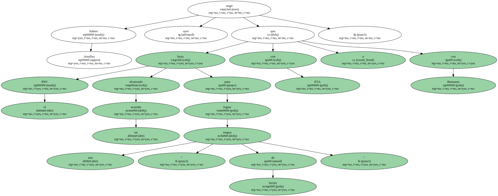" Es mentira " , dijo , en respuesta al vicepresidente Mariano Rajoy , quien sugirió que la inactividad de la organización terrorista se explica por un pacto entre la banda y los nacionalistas.
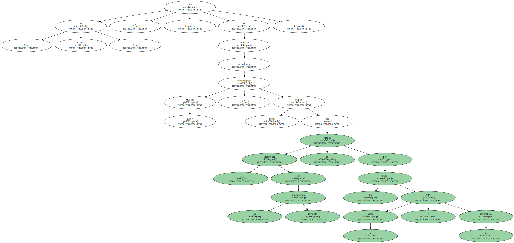" No sólo nos insultan , sino que mienten y lo saben . Da la impresión de que desean que ETA actúe ".
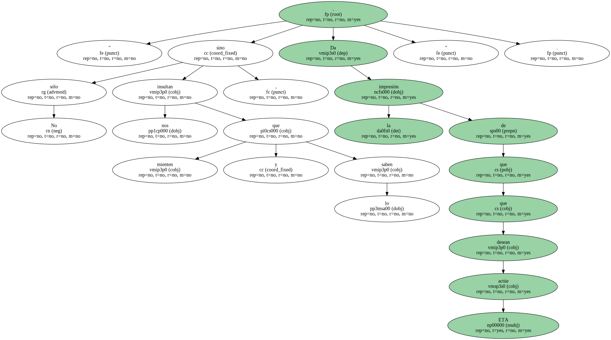Ante seguidores del partido en Mutriku ( Guipúzcoa ) , Arzalluz se reconoció indignado.
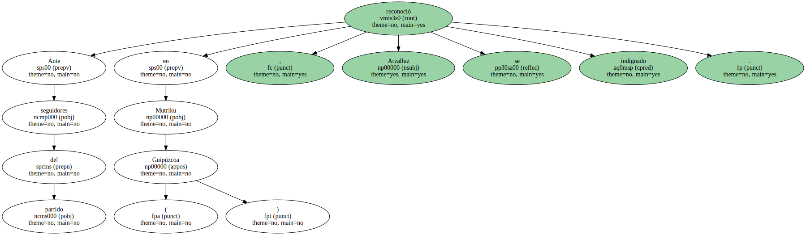" No hay derecho " , se quejó , en alusión a la " identificación " que hacen los populares entre el PNV y ETA.
" Nos atacan porque se lo pide el cuerpo , porque quieren ganar votos del Ebro para abajo y para tapar sus miserias ".
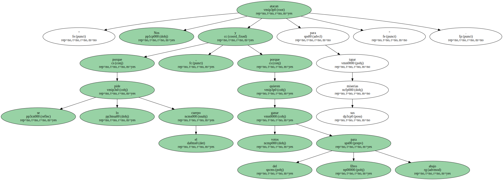El pacto que insinuó Rajoy se deriva del acuerdo sobre autogobierno alcanzado en el Parlamento vasco entre el PNV , EA e IU , con el beneplácito de Batasuna , para asumir más las competencias y permitir un referendo de autodeterminación a partir de septiembre.
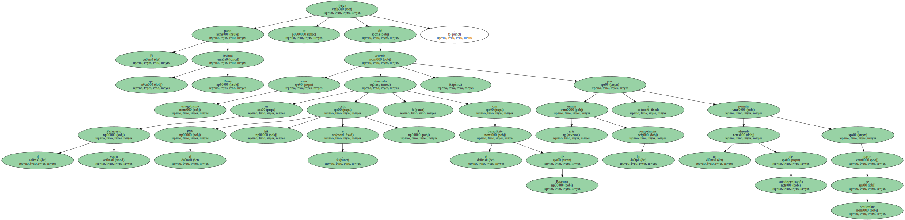Pero Arzalluz procuró restar trascendencia a lo que ocurrirá esa fecha.
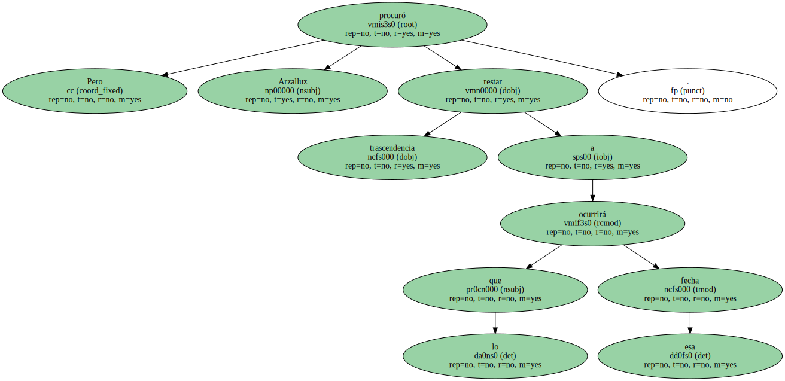Tres veces negó el líder peneuvista que su partido se vaya a " tirar al monte " en septiembre , cuando concluya el ultimátum que el lehendakari , Juan José Ibarretxe , dio a José María Aznar para traspasar las competencias pendientes a Euskadi.
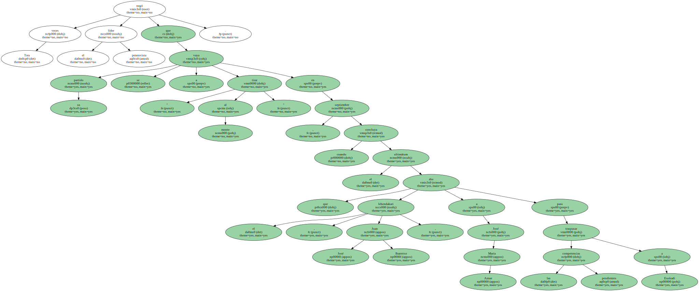" No nos echaremos al monte , pero tampoco nos vamos a quedar como lelos . La ley da para mucho y la voluntad del pueblo también " , dijo.
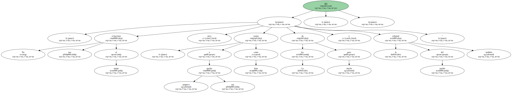Arzalluz quiso anular así la inquietud de algunos sectores del PNV ante el dictamen aprobado en el Parlamento vasco.
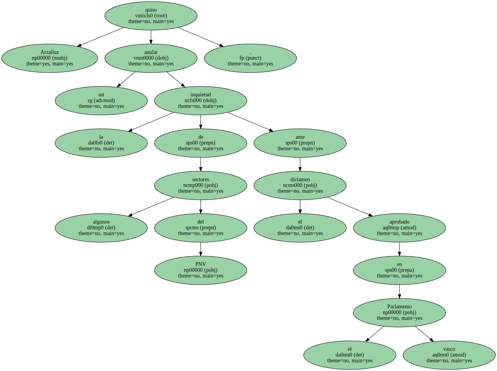" Hemos hecho un acuerdo porque creemos que es justo y es nuestro camino " , dijo.
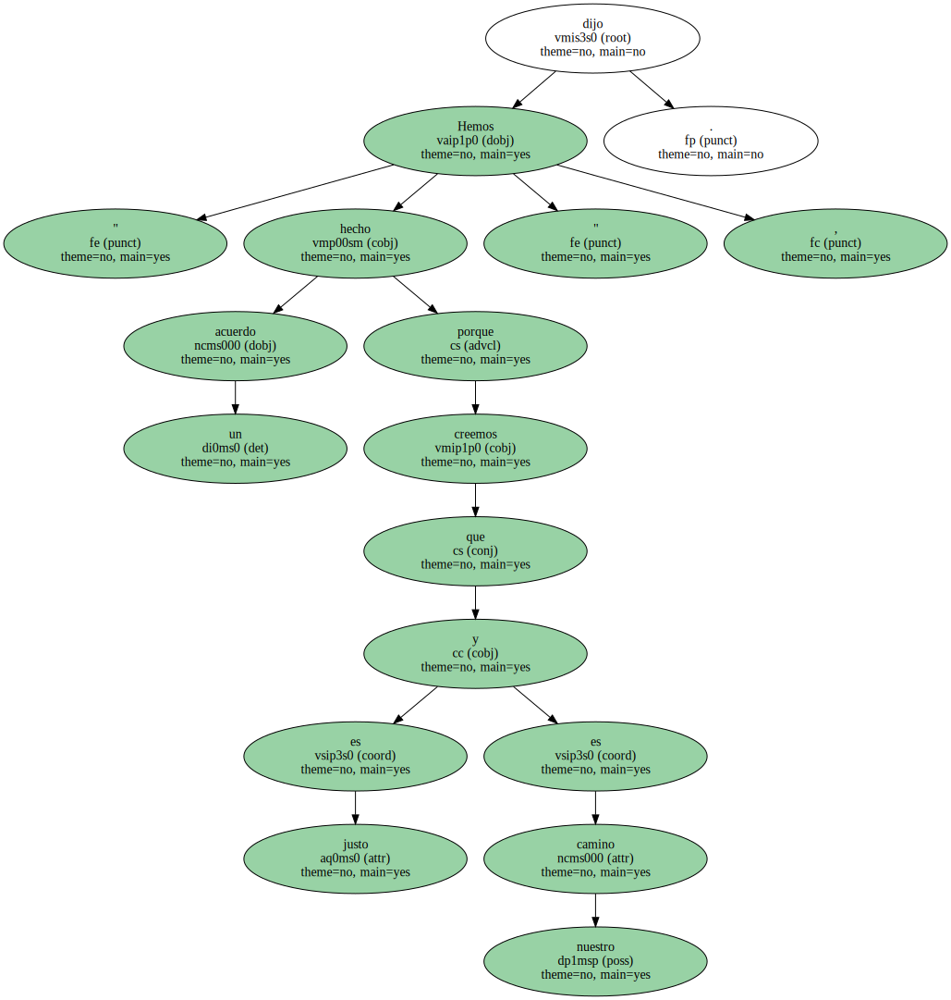El líder del PNV previno a los suyos de que no deben albergar " miedo " alguno.
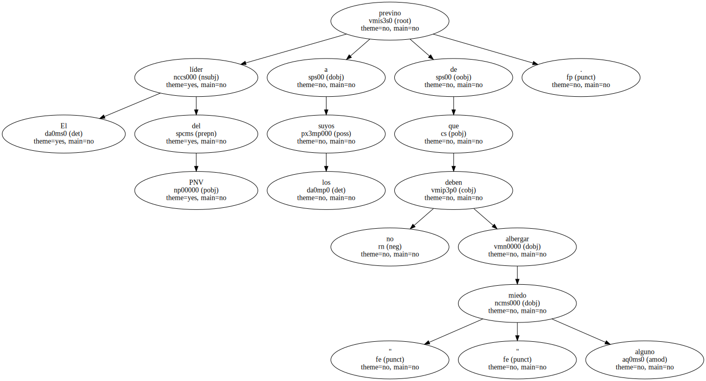El presidente del PNV también cargó contra el párroco de Maruri , que ha pedido escolta.
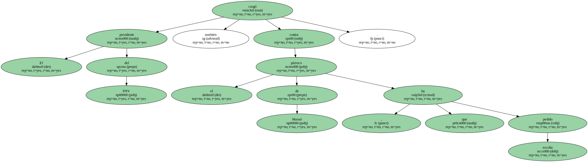El presidente del PNV también cargó contra el párroco de Maruri , que ha pedido escolta.
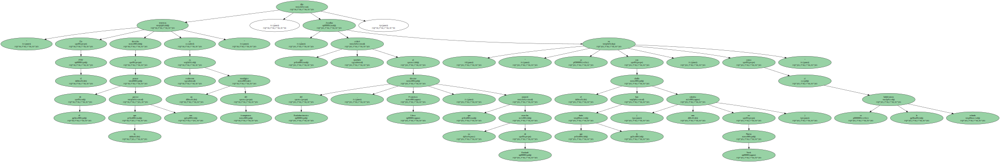" En el PNV tenemos derecho a pensar de él lo que nos parece si realmente es un nostálgico del franquismo " , dijo Arzalluz , que también criticó al director del Euskobarómetro , Francisco Llera , que anunció su marcha de Euskadi : " se va con el chollo que le han dado ( una cátedra en Nueva York ) , como si se le hubiéramos echado ".
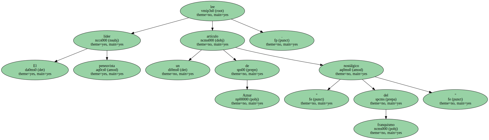El líder peneuvista lee un artículo de Aznar " nostálgico del franquismo ".
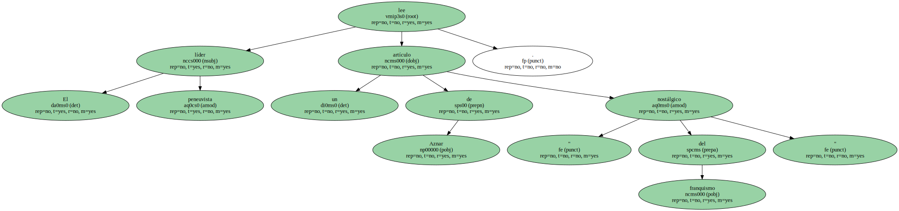Arzalluz recuperó ayer la hemeroteca para " retratar " a Aznar como " nostálgico del régimen franquista ".

Citó un texto del presidente en el diario Nueva Rioja del 9 de marzo de 1979.
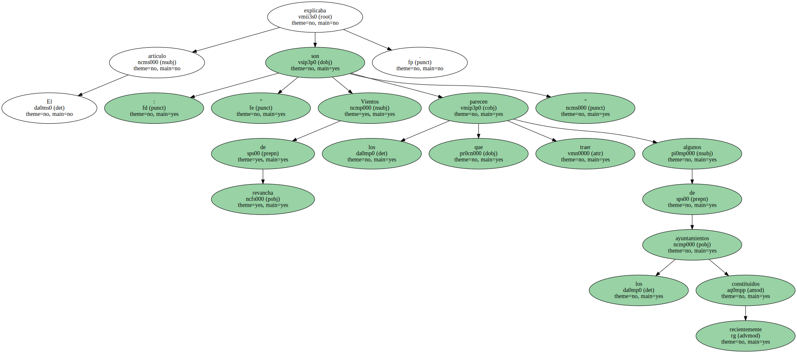El artículo explicaba : " Vientos de revancha son los que parecen traer algunos de los ayuntamientos recientemente constituidos ".
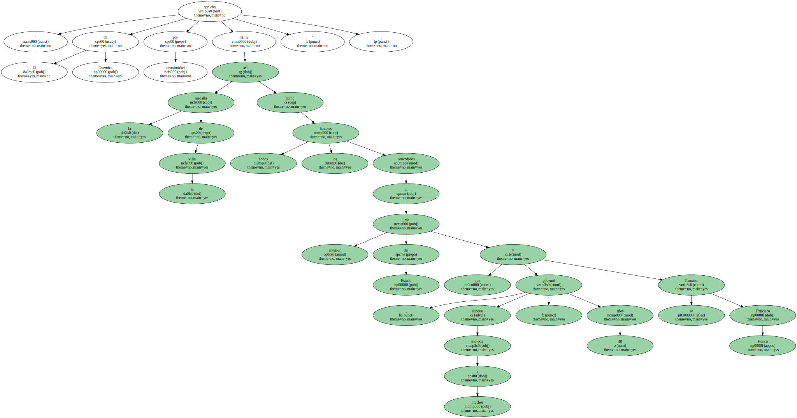" El de Guernica aprueba por unanimidad retirar la medalla de la villa así como todos los honores concedidos al anterior jefe del Estado que , aunque moleste a muchos , gobernó 40 años y se llamaba Francisco Franco ".

" El de Guernica aprueba por unanimidad retirar la medalla de la villa así como todos los honores concedidos al anterior jefe del Estado que , aunque moleste a muchos , gobernó 40 años y se llamaba Francisco Franco ".

" El de Guernica aprueba por unanimidad retirar la medalla de la villa así como todos los honores concedidos al anterior jefe del Estado que , aunque moleste a muchos , gobernó 40 años y se llamaba Francisco Franco ".
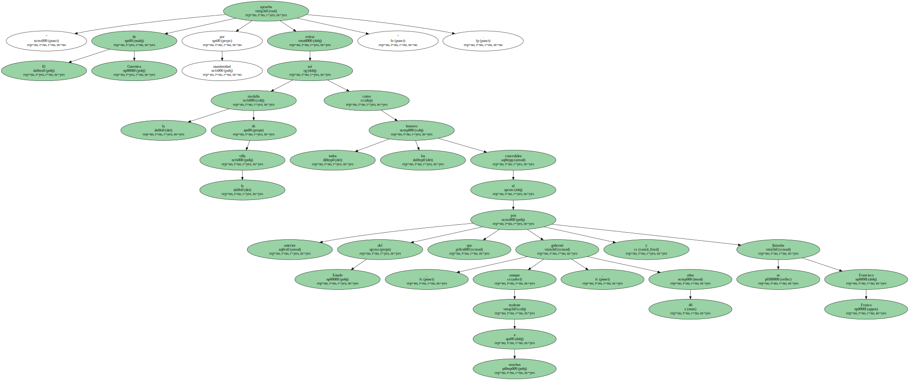" El de Guernica aprueba por unanimidad retirar la medalla de la villa así como todos los honores concedidos al anterior jefe del Estado que , aunque moleste a muchos , gobernó 40 años y se llamaba Francisco Franco ".